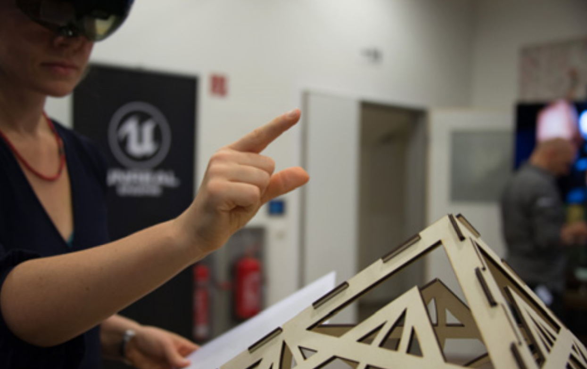

Mixed Reality based Collaboration for Design Processes

Authors. Natalie Hube, Mathias Müller, Esther Lapczyna, Jan Wojdziak
Venue. i-com (2020) Journal Paper
Type. Journal Paper
Abstract. Due to constantly and rapidly growing digitization, requirements for international cooperation are changing. Tools for collaborative work such as video telephony are already an integral part of today’s communication across companies. However, these tools are not sufficient to represent the full physical presence of an employee or a product as well as its components in another location, since the representation of information in a two-dimensional way and the resulting limited communication loses concrete objectivity. Thus, we present a novel object-centered approach that compromises of Augmented and Virtual Reality technology as well as design suggestions for remote collaboration. Furthermore, we identify current key areas for future research and specify a design space for the use of Augmented and Virtual Reality remote collaboration in the manufacturing process in the automotive industry.